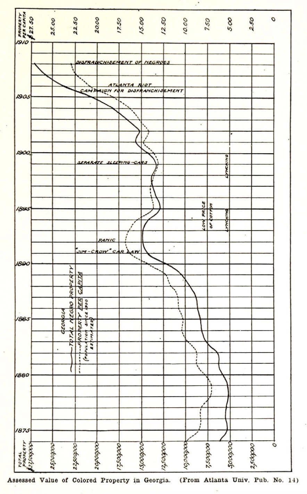

Violations of Property Rights
Few people who argue about the race problem know how that problem changes. Within the last twenty years this change has been so great that many fail to realize it, or if they do realize it more or less vaguely, they are puzzled at its new outcroppings. It seems to them as though this human difficulty was continually developing new and unexpected centers of trouble. As a matter of fact, however, what we have to-day might easily have been foreseen twenty years ago. We are having a change in the problem, but the change is logical and represents a more or less regular development.
To illustrate this let us remember what the argument against the Negro was in slavery days. It was said that he was an indolent tropical being who would not work without being driven and that it was utterly impossible that he should become a self-directing worker and work with initiative and a decent standard of life, and that if he were allowed to go free he would become a pauper or criminal, and very soon be extinct. This argument was thoroughly believed in by the mass of the best Southern people, and it undoubtedly did much to hold their hands back from all schemes of emancipation.
After the war the South and its friends hastened to point out that exactly what they foretold was happening. Their accusation against the Negro race was inborn laziness, and most superficial students of the Negro problem have seen what they think is ocular evidence of this laziness; the loafing about depots of Southern railway stations, the unreliability of Negro help, etc. So that from emancipation for a period of perhaps ten or twenty years the argument against the Negro in this country took this form: The Negro is lazy and is relapsing into barbarism, the young folks born during and since slavery are utterly worthless, and the better slaves of the old regime are going to disappear.
There was some truth in these assertions, but friends of the black man pointed out that a sudden revolution had taken place in the economic and social relations of these men; that they had been taught laziness both by the tropical climate of their forefathers’ home and by slavery, and that the only real present dangers were the hindrances which race prejudice was putting in their way. Gradually in the last fifteen or twenty years an answer to this argument was evolved. It was frankly admitted that there was prejudice and intense prejudice in social relations, but that this prejudice had absolutely nothing to do with the Negro as a workingman, and that consequently the argument of prejudice was outside of the question; that it was simply a matter of laziness and was to be cured by thrift. The Negro people were told, therefore, to work hard and regularly, and save their money.
In this later argument, again, there was a tremendous amount of truth. Certainly the first thing that a freedman must learn is regular habits and labor. He has been taught by slavery that labor is a badge of serfdom. He must teach himself that labor is a necessity of life. Moreover, under the slave regime money was an infrequent commodity which was immediately to be spent; while under the responsibilities of a free labor system it must be accumulated in small lots and very carefully guarded and saved.
While, however, this argument was strong and an argument that ought to have been made, it was not the argument that should have utterly displaced the insistence upon the evil of race prejudice. It was not too much to have asked intelligent people to foresee that race prejudice in the United States was going to hinder Negroes in getting work, and keep down their wages, and make it difficult for them to develop habits of thrift and to save. While on the one hand it was necessary, and imperatively necessary, that work and thrift should be insisted upon so far as Negroes were concerned, just as careful and widespread a campaign should have been carried on to see that the way before the faltering feet of the freedman was clear of hurtful and deadening prejudice. This necessity was not only not attended to but was even forgotten. The public have in later years come to be impatient of and observers to be optimistic and to dwell simply upon the shortcomings of the Negroes.
What has been the result of this policy? In the first place so far as the Negroes are concerned there can be no doubt that their energies have more and more been given to work and thrift, and despite all the testimonies of car-window sociologists there is absolutely undisputed evidence that the Negro has accumulated property. Full statistics unfortunately do not exist to prove this assertion; so far as crime is concerned we can get statistics of Negroes in practically every State, county and city in the United States, but when it comes to property there are only available figures in three States, and only in one State have these figures gone back for a considerable period.

The State of Georgia, beginning with 1874, has kept a careful account of the assessed value of the property owned by its Negro citizens. I have put on a chart the way in which that property has increased. It began at $6,000,000 in 1874, and did not increase for about six years, owing to the reconstruction troubles in this State. Then as gradually law and order were restored the accumulations began to go up, and once started they went very rapidly until they reached the culminating point in 1893. At that time the Negroes of Georgia were paying taxes on $14,000,000 worth of property. Then there came a check. First the panic of 1892, then a series of Jim Crow laws, four-cent cotton, and the epidemic of lynching. The result was that for five years the accumulations decreased or wavered. Then they took a new forward movement with the new century and went up rapidly until to-day the Negroes of Georgia pay taxes on about $30,000,000 worth of property. Moreover, as the assessments of property in Georgia are low, it is probable that this represents between $50,000,000 and $60,000,000 of actual value.
I have also tried to indicate on the chart the increase per capita of Negro property by a dotted line, and I have put down the Atlanta riot and the campaign for disfranchisement to indicate to you what is very clear in my mind, that this campaign was carried on chiefly because the Negroes were getting on too well.
Other States have made similar advancement, although there are fewer data. In Virginia, for instance, in 1891 Negroes paid taxes on $12,000,000 worth of property; in 1908 they paid taxes on $25,500,000. In North Carolina in 1900 Negroes paid taxes on nine and a third million dollars’ worth of property; in 1909 they paid taxes on $21,000,000 worth. Taking these three States together and considering simply the years 1900 to 1908 we find that in Georgia, Virginia and North Carolina colored people owned in 1900 $40,000,000 worth of taxable property, and in 1908 it had increased to $74,000,000. or an increase of 87 1/3 per cent.
Not only this, but the census of 1900 made an attempt to get some figures of the ownership of property by Negroes as a whole. They found that the Negroes, both as owners and tenants, operated 750,000 farms, containing 60,000 square miles, and that the total value of the property thus under Negro control was $500,000,000. with annual products to the amount of $256,000,000. Of these 750,000 farms one-fourth were owned by colored people, and the number of owners increased nearly 60 per cent, between 1890 and 1900, and there is every reason to believe that between 1900 and 1910 the increase has been far more than 60 per cent., and that to-day Negroes own somewhere near one-third of the farms which they operate.
Taking the 200,000 farms of the Negro owners we find that they, had in 1900 nearly 15,000,000 acres of land, which was worth $180,000,000, and raised $60,000,000 worth of products. All Negro farm property was estimated by the census to be worth about $230,000,000 ten years ago. The American Economic Association took up the subject, and concluded that the total property of the Negro race in 1900 was $300,000,000. If, however, the property has increased in the last ten years throughout the land in the same ratio as in Georgia, North Carolina and Virginia, then it would be fair to infer that the property of the Negroes in the United States should be assessed at $600,000,000.
Compared with the wealth of the United States these figures are small, but considered in the light of the fact that they represent the savings of a race that began practically without capital a generation ago, they are simply astounding. But what I want to point out to-day is that this accumulation has been made in the face of discouragements and violations of property rights such as no other class of Americans ever met. In the first place we must remember that it is the despised second generation since slavery that has made these accumulations and that these people have saved their money in the face of the following impediments:
- The lack of facilities for saving, and deliberate cheating.
- The hostility of local municipal policy.
- Discrimination in wages.
- Mob violence.
- Legal violence.
I want to take up each one of these in turn.
First, as to the lack of facilities for saving. Few people realize how difficult it is in the South for the poor man to save who wants to. Usually in the country districts there are but two methods open to him: To hoard his money or to hand it over to some white friend. There have been numberless cases where such white friends and patrons have taken care of the money of their Negro clients and acted as bankers, with the result that the colored man has been able to keep his savings secure and to accumulate. However, in an unfortunately large number of other cases the colored man has been cheated. Sometimes the patron has died suddenly and the client has been able to get no accounting from the heirs. This was peculiarly the case in regard to the property which free Negroes and favorite slaves accumulated before the war. In other cases the client has died and his heirs have been deliberately cheated by the natron. This has often been defended: Here is an old and favorite colored man whose property is kept by a white man. So long as he lives the property is safe in the white man’s hands. If he dies the white man decides that the children ought not have the property or do not deserve it, and takes it for his own purposes. In still other cases there is a deliberate attempt to cheat the client by false accounts or other devices. It is of course impossible to present figures to show the extent of this practice, but I have never been in a community in the South where the number of cases of deliberate cheating that could be pointed out was not simply appalling in frequency. I have great hopes in this respect of the Postal Savings Banks if the government will be careful not to put them all in the cities where they are not needed, but in the back country districts of the South.
Second, the hostility of municipal policy. Much has been said about the discrimination against Negroes by the State, and that in the South is large, but the real oppression in every-day life comes in the municipalities. The courts, for instance, are undoubtedly prejudiced against black men, but nevertheless it is possible in the higher State courts often to get substantial justice if the man has the money to take the case up. The legislatures are vicious in their attacks on Negro rights, but their doings are open to the public inspection of the whole United States, and must be somewhat curbed by law and public opinion. On the other hand, the action of the petty town, county and city governments is largely unnoticed and is often prejudiced and unfair to a degree almost unbelievable to those who do not know the facts. If, for instance, you go to an ordinary Southern town you are shown the Negro districts; the streets are unpaved; sidewalks are in a dilapidated condition; the drainage is bad; the garbage is not cared for, and the houses are dilapidated. Now. without doubt, part of this condition can be charged to the colored dwellers. but much of it is due to the deliberate refusal of the city to spend any public money on city improvements in the Negro district or to properly police this district. The Negro district is consequently not only without decent accommodations so far as the city is concerned, but it is at the mercy of the vicious, both of its own race and among the white race. There is scarcely a city in the South where the tenderloin district has not been deliberately placed in the Negro quarter and kept there despite the protest of the better class of Negroes. All this hurts Negro property and makes the investment of Negroes in property difficult. Moreover, the same thing that happens so often in the North is accentuated is this case, i.e., the small householder pays a disproportionately large share of the taxes as compared with the large householder or capitalist. The burden of taxation in Southern cities is shifted upon the small Negro property owner to an extent which is astounding. All this discourages accumulation and particularly discourages investment.
Moreover, the gross and glaring injustice to Negroes in the lower courts makes it difficult and often impossible to defend their property rights. The magistrates and judges are usually elected for short terms, often on an anti-Negro platform, and are bitter and openly unfair.
Third, wage discrimination. It is the deliberate policy of the South to pay Negroes less wages for the same work than they would pay white people, just as is the case in the North where they pay women less wages for the same work than they pay men. The argument in the South is that the Negro has a lower standard of life, and therefore does not need as much money. The discrimination varies from 25 to 50 per cent. This makes it more difficult for Negroes to save money, because, as a matter of fact, while their standard of living is lower than that of the average white person, it is rapidly rising, and the demand upon their meager income for better housing, better food and better clothing is such that the margin for saving is very small or entirely disappears.
Fourth, mob violence. Of all the hindrances enumerated—lack of facilities for saving, hostility of municipal policy and wage discrimination—none are such detriments to saving in the South as the fear of mob violence. It is hard to realize in a law-abiding community how the fear of physical violence broods in the air in the South. No Negro can feel himself safe from it. He cannot invest in property without taking it into account. In some cases it is impossible to get his property insured for this very reason, and almost always when for any reason there is an outbreak of great violence in the South, it is the Negro property holder who actually pays the bill. The result is that continually men who might otherwise invest in property refrain from doing this, and other colored men who invest do so with the idea of removing to the North just as soon as they get large enough investments. The feeling of insecurity against the jealousy and viciousness of certain Southern elements is daily in their minds. It is this feeling, too, that drives the Negro into the cities; there his property gets greater police protection because it cannot be destroyed without in some degree injuring the property of white owners or injuring the general credit of the community.inally, this kind of mob violence has gone so far that we are seeing attempts to-day to translate it into legal violence. Just as the cheating of the Negro out of his vote was done by extra legal methods at first, and now is done by methods called legal, so the cheating of Negroes out of their property rights is now about to be translated into some semblance of legal form. The whole question of segregation in property is coming up at a later session, and therefore does not fall within the province of this paper; but I wish to point out that segregation is the violating of property rights, and that it is as futile an attempt to solve the Negro problem as any of the previous subterfuges have been.
In the time of slavery we had the subterfuge of colonization to tempt the conscientious mind; in the time of reconstruction we had the subterfuge of threatened Negro domination to blind those who ought to have seen; in the days since Reconstruction we have had the subterfuge of industrial inefficiency to make people forget race prejudice. Today the world, north and south, is being asked to believe that the crux of the Negro problem lies in keeping black men from buying property on your street. All through this history of subterfuge and evasion has run the great and dominating fact of a racial prejudice which denies the application of the ethics of Jesus Christ in the relations of men if these men happen to be of a different race. It is the object of the National Association for the Advancement of Colored People to impress the fact upon the American people that the foundation difficulty of the race problem is this despicable race prejudice, and that unless we attack this central difficulty we never shall settle this problem. Moreover, we insist that this problem must be settled and settled right, because it is but a part of a greater problem which is as wide as the world.